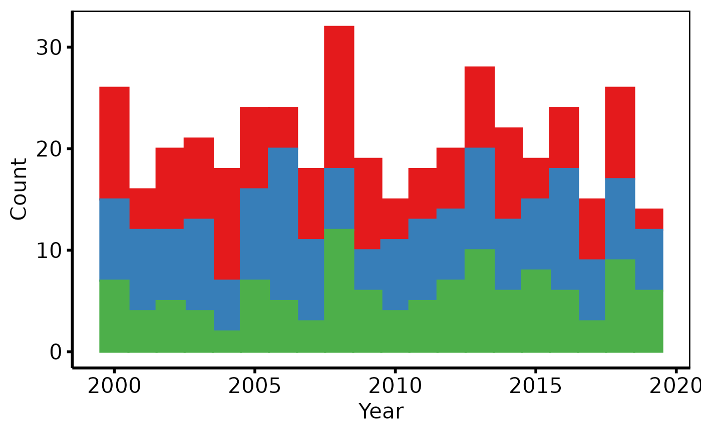

Validates a patient-level or observation-level data frame and returns an
hv_stacked object. Call plot.hv_stacked on the
result to obtain a bare ggplot2 stacked (or proportional) histogram
that you can decorate with colour scales, axis labels, and
hv_theme.
Usage
hv_stacked(
data,
x_col = "year",
group_col = "category",
binwidth = 1,
position = c("stack", "fill")
)Arguments
- data
A data frame.
- x_col
Name of the numeric column to bin along the x-axis. Default
"year".- group_col
Name of the column whose distinct values define the stacked groups. Will be coerced to a factor inside the aesthetic mapping. Default
"category".- binwidth
Width of each histogram bin, in the same units as
x_col. Default1.- position
Bar position:
"stack"(raw counts, the default) or"fill"(proportions that sum to 1 within each bin).
Value
An object of class c("hv_stacked", "hv_data"):
$dataThe validated input data frame.
$metaNamed list:
x_col,group_col,binwidth,position,n_obs,n_groups.$tablesEmpty list.
Examples
dta <- sample_stacked_histogram_data()
# 1. Build data object
sh <- hv_stacked(dta, x_col = "year", group_col = "category")
sh # prints obs / group count
#> <hv_stacked>
#> N obs : 419 (3 groups)
#> x / group : year / category
#> binwidth : 1
#> position : stack
# 2. Bare plot -- undecorated ggplot returned by plot.hv_stacked
p <- plot(sh)
# 3. Decorate: fill/colour brewer palette, axis labels, theme
p +
ggplot2::scale_fill_brewer(palette = "Set1", name = "Category") +
ggplot2::scale_color_brewer(palette = "Set1", name = "Category") +
ggplot2::labs(x = "Year", y = "Count") +
hv_theme("poster")
